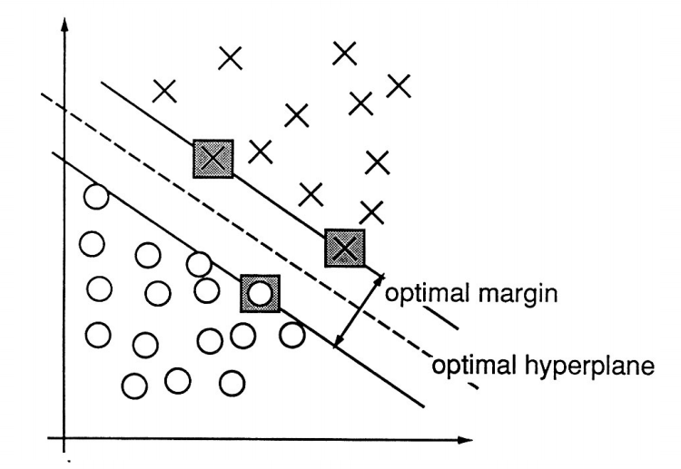
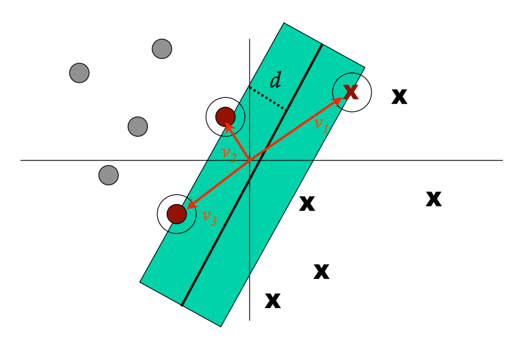
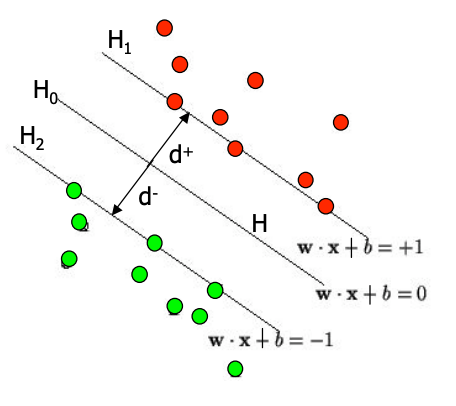

1. Support Vector Machine
Support Vector Machine(SVM) is one of the most popular machine learning algorithms used for classifying task.
In binary classification, SVM finds the best decision boundary that separates two classes with maximum margin distance. This means the distance between nearest data points of 2 classes is as large as possible

In which, support vectors are the data points that lie closest to the decision boundary. In other words, support vectors are critical points that influence to the direction and position of the decision boundary.

Suppose there are an input feature vector \(X=\left[\begin{array}{}x_1&x_2&...&x_N\end{array}\right]\), an output value \(Y\), output is vector \(W=\left[\begin{array}{}w_1&w_2&...&w_N\end{array}\right]\), so that the linear combination \(WX + b = Y\) or \(\sum_{i=1}^{N} w_ix_i + b = Y\)

Define the hyperplane \(H\) such that \(WX_i + b \ge +1\) when \(Y_i = +1\) and \(WX_i + b \le -1\) when \(Y_i = -1\)
The plane \(H_1\) is \(WX_i+b=+1\), \(H_2\) is \(WX_i + b =-1\), \(H_0\) is \(WX_i + b = 0\)
The value \(d+\) is the distance from the nearest positive point to \(H_0\), \(d-\) is the distance from the nearest negative point to \(H_0\)
The points on \(H_1\) and \(H_2\) are support vectors.
The margin of hyperplane is the distance between \(H_1\) and \(H_2\) or the summation of \(d+\) and \(d-\)
The distance from any point on \(H_1\) to \(H_0\) is \(\frac{\left|WX + b\right|}{||W||} = \frac{1}{||W||}\), then the distance between \(H_1\) and \(H_2\) is \(\frac{2}{||W||}\)
In order to maximize the margin, we need to minimize \(||W||\) with constraints \(WX_i + b \ge +1\) if \(Y_i = +1\) and \(WX_i + b \le -1\) if \(Y_i = -1\).
The constraints can be recombined as \(Y_i(WX_i) \ge 1\)
So, the SVM problem is minimizing \(||W||\) or \(\frac{1}{2} ||W||^2\) such that \(Y_i(WX_i + b) = 1\) or \(Y_i(WX_i + b) - 1 = 0\). This optimization problem with contraint can be solved by the Lagrange multiplier.
\[min L = \frac{1}{2}||W||^2 - \sum_{i=1}^M \lambda_i(Y_i(WX_i + b) - 1)\]
\[\Rightarrow min L = \frac{1}{2}||W||^2 - \sum_{i=1}^M \lambda_iY_i(WX_i + b) + \sum_{i=1}^M \lambda_i\tag{1}\]
Where \(M\) is number of observations.
Take the partial derivative with respect to \(W\) and \(b\) and set them to zero
\[\frac{\delta L}{\delta W} = ||W|| - \sum_{i=1}^M \lambda_iY_iX_i = 0\]
\[\frac{\delta L}{\delta b} = \sum_{i=1}^M \lambda_iY_i = 0\]
\[\Rightarrow ||W|| = \sum_{i=1}^M \lambda_iY_iX_i, \sum_{i=1}^M \lambda_iY_i = 0\tag{2}\]
Substitute \((2)\) into \((1)\), we have a new Lagrange Dual Problem that is instead of minimizing \(L\) wrt \(W, b\), we maximize \(L\) wrt \(\lambda\) (An Idiot’s guide to Support vector machines (SVMs))
\[max L = \frac{1}{2}\sum_{i=1}^M \lambda_iY_iX_i \sum_{j=1}^M \lambda_jY_jX_j - \sum_{i=1}^M \lambda_iY_iX_i\sum_{j=1}^M \lambda_jY_jX_j - b \sum_{i=1}^M \lambda_iY_i + \sum_{i=1}^M \lambda_i\]
\[\Rightarrow max L = \frac{1}{2}\sum_{i=1}^M \sum_{j=1}^M \lambda_iY_iX_i \lambda_jY_jX_j - \sum_{i=1}^M \sum_{j=1}^M \lambda_iY_iX_i \lambda_jY_jX_j + \sum_{i=1}^M \lambda_i\]
\[\Rightarrow max L = \sum_{i=1}^M \lambda_i - \frac{1}{2}\sum_{i=1}^M \sum_{j=1}^M \lambda_i\lambda_jY_iY_jX_iX_j, st. \sum_{i=1}^M \lambda_i Y_i = 0 \tag{3}\]
Solve the quadratic equation \((3)\) to obtain \(\lambda\), then substitute \(\lambda\) back into equation \((1)\) and solve it to obtain \(W\) and \(b\)
2. Experiment
Demo video
3. References
- An Idiot’s guide to Support vector machines (SVMs)
- https://towardsdatascience.com/support-vector-machine-introduction-to-machine-learning-algorithms-934a444fca47
- https://towardsdatascience.com/support-vector-machine-explained-8bfef2f17e71
- https://www.khanacademy.org/math/multivariable-calculus/applications-of-multivariable-derivatives/constrained-optimization/a/lagrange-multipliers-single-constraint